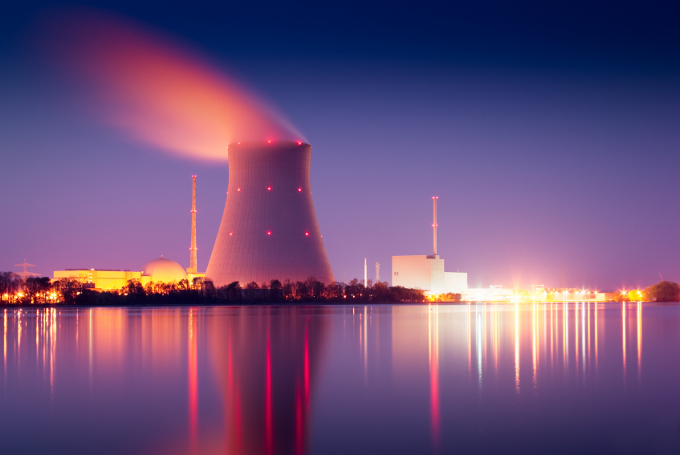
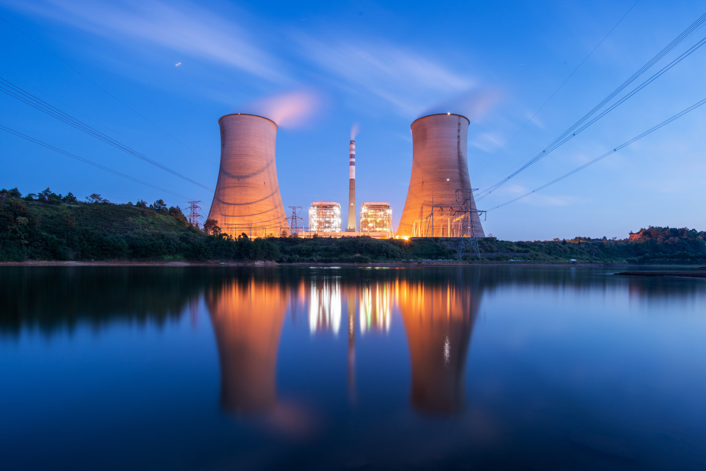
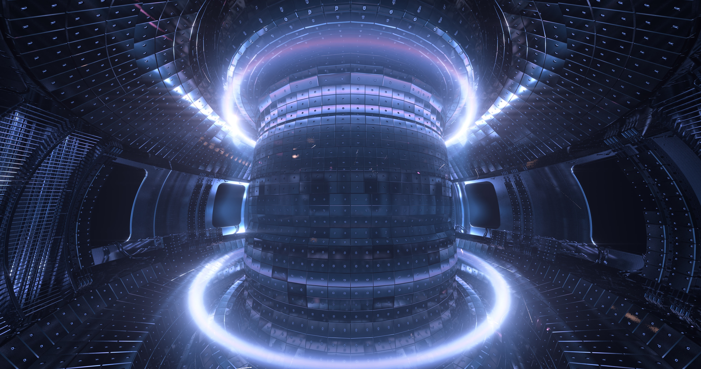

Going Nuclear.

Today we will be looking at the history of nuclear energy and how it may help us in the future. From the discovery of nuclear fission to its more attractive cousin: nuclear fusion, today we learn the ins and outs of the atomic realm.
Nuclear Fission, a short history.⌗
Let’s start our journey with possibly one of the most important discoveries of the 20th century: Nuclear Fission. Nuclear Fission was first discovered in 1938 in Berlin after 50 years of research into radioactivity, which naturally broadened into what is now known as nuclear physics. This research includes the discoveries and works of legendary physicist Ernest Rutherford who famously discovered the structure of the atom in 1911.
In 1917 Rutherford was to be the first to observe a nuclear reaction, that is the use of a decaying material to transform the nucleus of another atom. He had directed an alpha particle towards a nitrogen atom, causing a single proton to split from the nucleus and transforming the atom into one of oxygen. Despite a few clear differences between this and actual nuclear fission with heavy elements, this would become known as the modest beginning of a nuclear age.
It took until 1934 for the Italian physicist Enrico Fermi to ‘bombard’ uranium with neutrons, concluding that the experiment had created two new elements with 93 and 94 protons respectively. This discovery was then picked up by Otto Hahn, Lise Meitner and Fritz Strassmann at what is now the free university of Berlin, who also began running experiments to try to confirm the discovery.
During one particular experiment, Otto Hahn had stumbled upon a rather strange result; after bombarding uranium with neutrons they had found evidence of an element that bore similar characteristics to barium. This discovery was particularly odd as barium was almost half of the weight of a uranium atom and thus far no person had ever observed more than one or two protons separate from a nucleus, most physicists at the time believed that atomic nuclei could never decay that much.
After seeing what many would simply write off as an anomaly; Hahn suggested that perhaps the nucleus had ‘burst’, despite being unsure if such an occurrence was even theoretically possible. After much deliberation, Meitner and Fritz concluded that Hahn’s theory must have been right and they called it ‘Fission’, after the way that cells divide by splitting in a process called ‘Binary fission’.
Finally, on the 22nd of December 1938, the trio informed the ‘Naturwissenschaften‘, a peer-reviewed science journal, of their discovery. Hahn would, for his part in the discovery receive the Nobel prize for Chemistry in 1944.
After the Meitner team’s discovery, the allied scientists of Britain, Canada and the US would use the process of fission to create a bomb more powerful than anything any person on the planet at the time could have imagined. This single discovery set off a chain of events that would influence almost all other aspects of life. During the post-war period, visionaries even foresaw that nuclear reactors would power everything and anything, big or small, and the strategic use of threats of using the almighty power of the bomb led to widespread fears that the world would tear itself apart, even to this day those very fears are played upon.

The Future of Nuclear Fission.⌗
Over the last 80 years or so, there have been many different discoveries linked to nuclear fission. Since its early phase where we were promised a new future where everything was powered by the atom, the public has become quite alienated by the disasters of Chernobyl and Fukushima, not to mention the constant threat of nuclear war by the major world powers. This alienation is very much warranted as the current use of Uranium and Plutonium is, although not as dangerous as people seem to think, still not foolproof as we have proven time and time again.
The lack of a safe culture which has to be cultivated around the business of nuclear energy production, in its current form, is really worrying. The previously mentioned nuclear disasters have inspired many books, films and television series, most recently the HBO series ‘Chernobyl’, which play on the fears of the public surrounding nuclear energy. As I said, I do think that some of this scepticism is justified as with a fission reaction, the operator is constantly trying to manage and slow down the reaction which, if let out of control, can produce a meltdown or spread of serious radiation, not to mention the problem of nuclear waste and possible leaking of radioactive material.
Despite these very serious concerns and problems with the nuclear industry, it still seems to be the most effective way to transition away from fossil fuels. It has, despite all odds continued to be the energy source that has the lowest carbon footprint, beating even solar and wind, and it also has the lowest death toll of all the energy sources despite its public image.
If we ever want to restore our planet and save it from irreversible damage from global warming and climate change, which will only accelerate exponentially if we continue to burn coal, gas and oil in the fashion that we are currently, then nuclear power seems to be the only way to go at this point in time.
Despite this need, however, nobody seems willing to spend the money to develop the technology further and we are still closing down nuclear plants around the world at a record rate, ironically the recess in power supply that this causes is being picked up by the much less sustainable and more dangerous and environmentally damaging fossil fuel energies.
Even better alternatives.⌗
Although nuclear reactors are already the safest, cleanest and most reliable source of energy, which also produces the least amount of toxic waste, that we have, they can still be vastly improved. There are still inherent problems that need to be fixed, for instance, the waste that is produced, the radiation that both the process and the waste emit and cost & scale of the nuclear power plants.
During the golden age of nuclear power, the Oak ridge national laboratory in Tennessee began running an experiment that was aimed at looking into the feasibility of a new kind of nuclear reactor that used a new kind of fuel: Thorium.
The Molten Salt Reactor Experiment (MSRE) was an experiment that ran from 1964 until 1969, exploring the possibility of thorium powered molten salt reactors. The experiment was shut down due to a lack of funding from the US government but ultimately proved not only that a thorium reactor was possible, but that it was safer, the fuel was cheaper and the waste would have a half-life many thousands of years shorter than that of uranium and plutonium.
Even though thorium is very obviously a better fuel choice, a fact that many companies, scientists and governments across the globe knew: we still chose to use enriched uranium which we could use to create nuclear weapons. We spent our time and resources creating a fuel supply that would give us the weapons that we all fear today, while we also neglected a cheaper, more abundant, less dangerous and ultimately more powerful source of energy.
Now that we’re stuck with the inferior fuel and despite the fact that the planet is in danger from the effects of our greed, no government, company or person is willing to spend the money to build new traditional reactors, let alone developing an entirely new one with a non-existent fuel supply.
The problem with nuclear power ends up being, not about the energy source itself but, about the stigma surrounding it. No person or company is willing to sacrifice their public image, and no government official is willing to possibly sacrifice their position of power, to take a stand and spend the initial money to build new reactors or develop new technology.

Nuclear Fusion.⌗
At this point it may seem hard to fathom that nuclear energy could ever get more attractive than thorium salt reactors but while the Meitner team in Berlin were investigating fission; in 1932 fusion, the combining of two nuclei to form a new element, had been discovered by Mark Oliphant as part of a 50 year study into what powered stars.
Fusion is the same process as what happens at the centre of the sun and every other star in the universe, this is achieved when a gas cloud forms and a slight gravity occurs, this will cause the gas to pack more tightly. The gas keeps getting denser until fusion begins to occur which dramatically heats up the elements in what is now a star.
Here on earth, the most reliable way to achieve fusion is to use deuterium, an isotope of hydrogen, which is more than abundant here on earth. After pulling the best vacuum that you can manage on your reaction chamber, it’s time to fill it with deuterium and heat the chamber while pressurizing it as much as possible. When there is enough heat and pressure, the atoms inside will start to hit each other and some will fuse to make helium, giving off a little bit of energy.
Fusion is the holy grail of energy and there are many ways of achieving it, best of all it would be cheap, safe and produces a negligible amount of waste with a half-life of just minutes. Unfortunately, the same property of fusion which makes it safe is also what is holding us back; fusion is not a self-sustaining reaction like fission; at the moment it is taking far more energy to sustain the reaction than the reaction is producing. This property means that fusion could never create any sort of nuclear explosion but it also means that it is very hard to make fusion worthwhile.
There are already many thousands of scientists around the world and many billions of dollars of investment going into nuclear fusion all of which is going at the problem in many different ways all of which have different methods of heating the material to the most extreme temperatures possible and any of these methods could be the way to achieve a sustained reaction where it produces more power than it uses.
In Conclusion.⌗
I think that we should immediately divert funds from less clean means of energy including wind and solar energy into constructing new nuclear power plants which are designed from the ground up to be safe, they should in any imaginable event be able to automatically shut themselves down despite a lack of power or human intervention. These measures should make the plants considerably safer and allow them to take over all of the power supply.
On top of this, despite the redundancy we build in our reactors, we should also create a much more robust stance on the culture of safety within the institutions that run our nuclear power plants.
Next, we need to begin funding research into thorium salt reactors which I estimate would be able to start construction in around 10 years, this should secure our energy needs for hundreds if not thousands of years.
And lastly we should continue to invest heavily into nuclear fusion experiments, if we achieve a sustainable reaction then our energy supply is guaranteed for the longest foreseeable future.
Many people seem to think that nuclear energy is an old and dying form of energy supply, but this is far from the truth; nuclear energy is the future, it is the way forward. If we want to survive on this planet for even fifty more years then we need to make a drastic, swift and decisive move towards nuclear energy, the survival of our species depends on it.
– Chico Demmenie.
Sources:
- Markandya A. & Wilkinson P. 2007 “Electricity generation and health.” The Lancet. 370 (9591) Pages 979-990
- China-US Cooperation to advance Nuclear power.
[Re-Uploaded & Edited 30/09/2022]